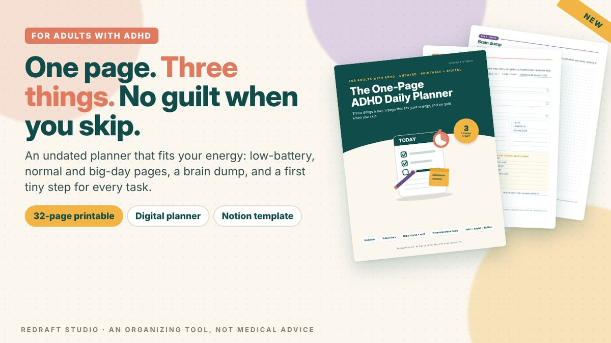
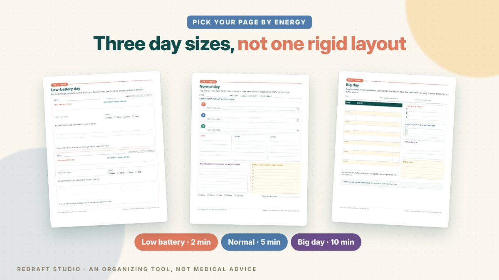
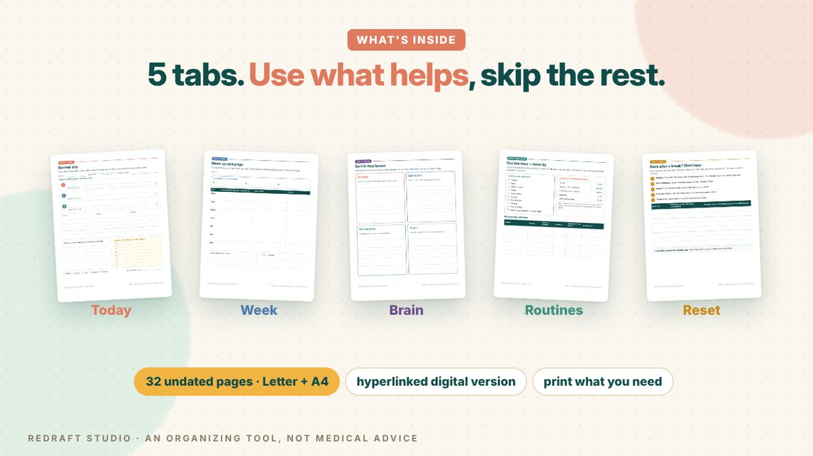
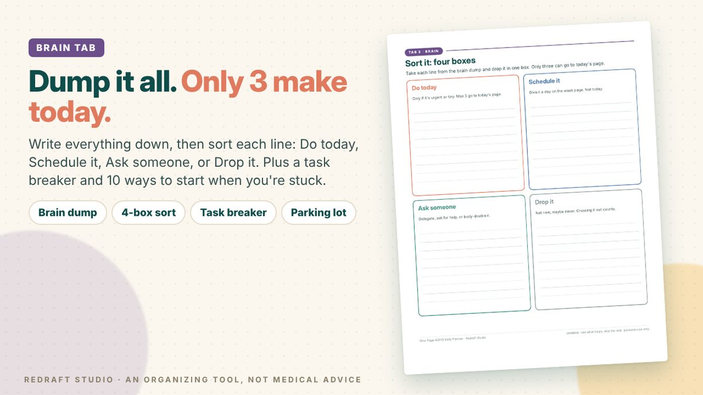
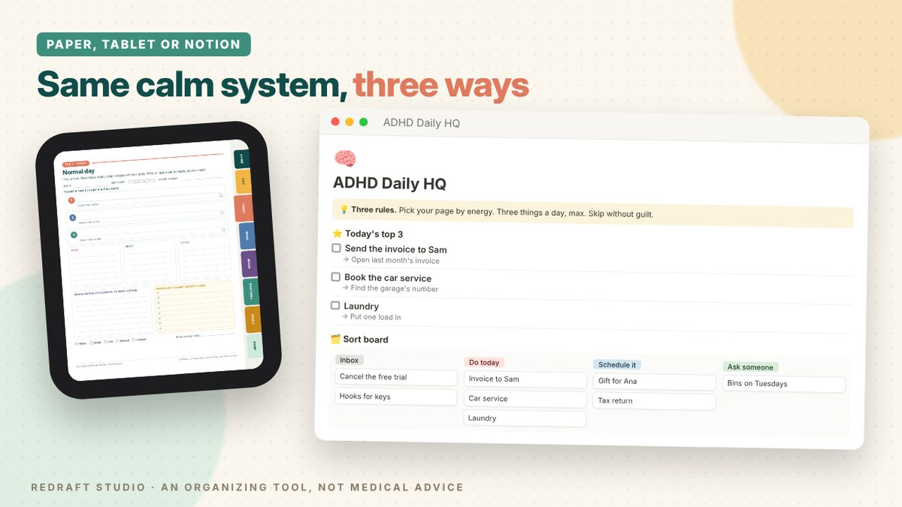
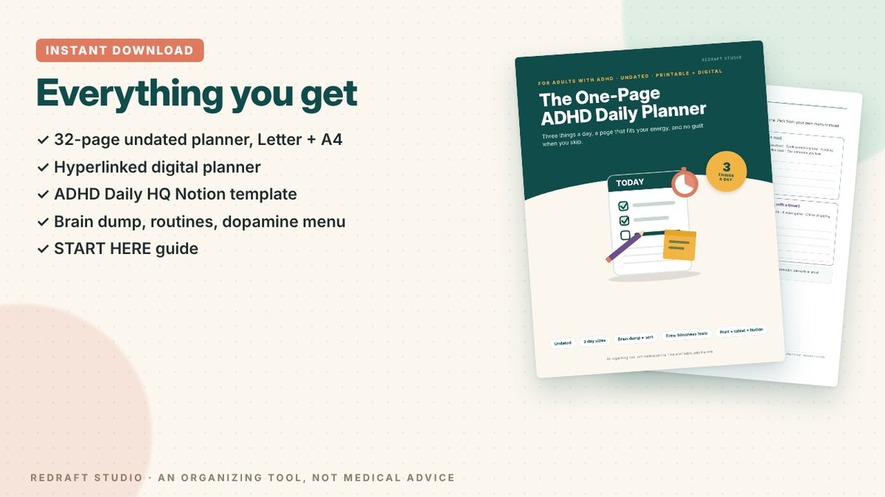

One-Page ADHD Daily Planner
An undated one-page daily planner built for ADHD brains, with digital and Notion versions.
Instant download. Pay once, print as often as you like.

The ADHD planner that asks for less
If you've bought planners, filled in the first week and then let them gather dust, it isn't you. Most planners are too busy (ten boxes a day), too rigid (one layout for every kind of day), and dated, so one skipped day turns the whole thing into a guilt pile. This one runs on three rules:
- Pick your page by energy. A low-battery page (one must-do, one kind thing), a normal page (top 3, then Now / Next / Later) and a big-day page (time blocks with buffers built in).
- Three things, max. Everything else goes in the brain dump and gets sorted into four boxes: Do today, Schedule it, Ask someone, Drop it.
- Skip without guilt. It's fully undated. Missed a week? Turn to a fresh page. A "Back after a break" page makes restarting a 3-minute job.
What's inside
- Today: low-battery day (2 per page), normal day plus a filled-in example, big day, and a guess-vs-real time log for time blindness
- Week: week on one page, a 10-minute weekly reset, an undated month, and a habit tally (not streaks)
- Brain: brain dump, the 4-box sort, a task breaker, 10 ways to start when you're stuck, a parking lot and a waiting-on list
- Routines: morning launch, evening shutdown, out-the-door checklist, leave-by calculator, dopamine menu, and bills and important dates
- Reset: back after a break, talk back to your brain, proof I can do hard things, and a monthly check-in
Three formats, one calm system
- Printable PDF, 32 pages, US Letter and A4. Print only the pages you use.
- Digital planner PDF with tap-to-jump tabs for GoodNotes, Notability, Xodo or any PDF app with a pen. Duplicate pages forever.
- ADHD Daily HQ Notion template: Brain Dump with a sort board, Today's Top 3 with first tiny steps, Done list, time check, habit tally chart, wins wall, routines, dopamine menu and a restart page. Works on Notion's free plan.
Good to know
- Instant download. Open START HERE first. Setup takes 3 minutes: brain dump, pick 3, write the first tiny step.
- For personal use. Please don't share or resell the files.
- An organizing tool, not medical advice. It doesn't diagnose or treat ADHD and doesn't replace support from a doctor, therapist or coach.
Made by Redraft Studio. Every product we make is a second, better draft of something people told us wasn't working.





Not sure yet? Start with the free kit.
Free ADHD Overwhelm Kit: a few pages from the same system, free to download and print.
Download the free kit